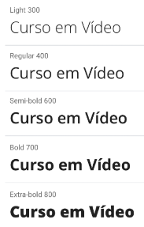
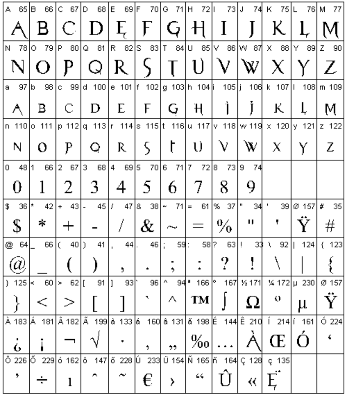
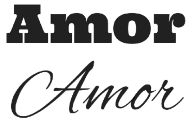
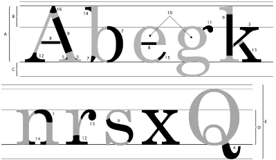

Vamos Falar das Fontes
As cores são muito poderosas na construção de site, mas não podemos nos esquecer das fontes. As fontes são ótimos recursos visuais para criar identidade à sua página, mostrando a ideia que queremos passar com o nosso design.
Tipografia? Que bicho é esse?
As fontes, assim como as cores, são capazes de transmitir emoções, a somo das duas causa um resultado poderoso!
Para entender as fontes temos que entender o básico da tipografia, que é uma arte antiga que estuda as técnicas de escrita.
Fonte, letra e família
Glifos, letras, caracteres
São os signos alfabéticos projetados para reprodução mecânica. As letras são os "glifos".
Família tipográfica
Conjunto de glifos que possuem as mesmas características anatômicas, independente de suas variações.
Um exemplo disso: a família tipográfica Open Sans possui várias configurações de peso (de 300 a 800), mas todos são da mesma família. Observe na imagem a seguir:

Fontes
Conjunto de glifos que formam uma família tipográfica. Ex:

As fonte falam?
Precisamos saber escolher as famílias tipográficas que utilizaremos em um site. As fontes também podem passar emoções. Ex:

A maioria das pessoas escolheria a segunda fonte, sabe por quê? A palavra "amor" tem mais a ver com uma representação mais suave e fluida, não algo mais robusto e forte.
Mas a escolha não é tão simples assim, o exemplo acima mostrou uma palavra isolada e assim foi fácil decidir, mas a situação muda quando se trata de um texto. Existe um quesito chamado legibilidade, que pode mudar a nossa escolha:

Mesmo que no exemplo acima as palavras tenham uma legibilidade razoável, a leiturabilidade não é tão mboa assim. Essa segunda característica diz repeito à fluidez que conseguimos ter na leitura.
Por isso que escolher um bom tipo é essencial para cada caso, no máximo use de 2 a 3 tipos de fonte.
Vamos ver algumas características anatômicas dos tipos para poder escolher a melhor fonte para nosso site.
Anatomia do Tipo
Vamos analisar cada uma das partes de um tipo.

- Altura das maiúsculas: o tamanho que elas vão ocupar.
- Ascendente: Parte da letra maiúscula que se ergue acima da linha mediana.
- Descendente: Parte das letras maiúsculas que passa por baixo da linha base.
- Altura-X: Chamada de mediana, define o tamanho das letras minúsculas. Tem o tamanho da letra x minúscula, por isso o nome.
- Corpo: a soma das quatro medidas= ascendente + altura-x + descendente + espaço de reserva. Tamanho total da letra, valor usado para definir o tamanho da fonte em um texto.
- Arco: presente em letras minúsculasm linha curva que nasce na haste principal.
- Barriga: curva em uma letra, fechada, ligada à haste vertical em dois pontos.
- Braço: traço horizontal ou inclinado, ligado à haste vertical principal de uma letra.
- Cauda: apêndice do corpo de algumas letras, que fica abaixo da linha base.
- Enlace: linha que se liga a um arremate, a uma serifa ou a um terminal. Pode ser angular ou curvilíneo.
- Espinha: curva e contracurva estrutural da letra S.
- Esporão: projeção que encontramos nas letras b e G.
- Filete: haste horizontal ou inclinada, fechada nas duas extremidades, por duas hastes ou duas curvas.
- Haste: traço principal de uma letra, geralmente vertical.
- Olho: espaço em franco, fechado, dentro de uma letra.
- Orelha: apêndice presente na letra g, que pode apresentar vários formatos.
- Pé: terminal ou serifa horizontal que arremata uma perna na parte de baixo.
- Perna: haste vertical ou inclinada com uma extremidade livre (ou com um pé) e a outra extremidade ligado à seu corpo.
- Serifa: também chamada de apoio ou patilha. São pequenas retas que ornamentam as hastes de alguns tipos.
- Terminal: forma que arremata a extremidade de uma linha curva de uma letra.
- Vértice: também chamada de ápice. Formada pela convergência de duas hastes que se encontram. Pode ter vários formatos.